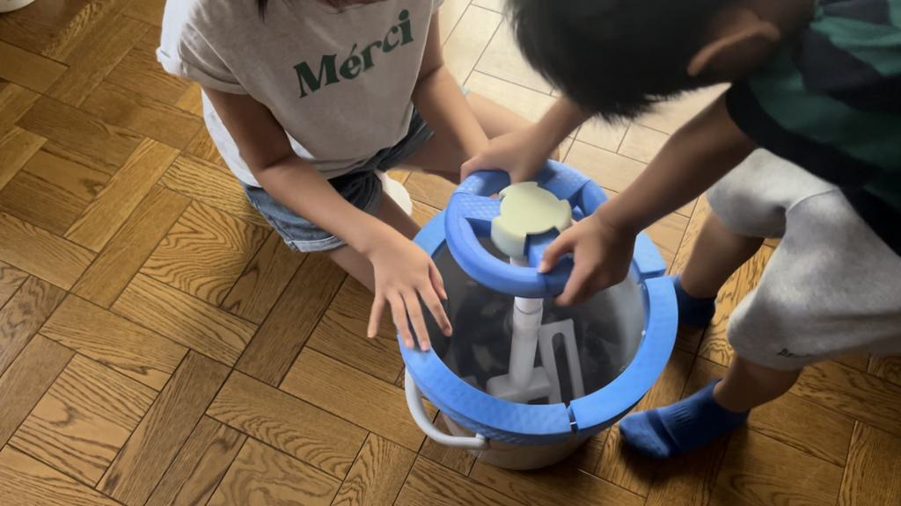

2024鎌倉共創プロジェクト
上履き
親子にインタビューした中で、上履きをなかなか自分で洗わず、「洗って」と言う方も言われる方もストレスを感じてしまうという問題があった。中敷きと本体が干すときにばらばらになってしまうというのも上履きを洗うのが面倒くさくなってしまう原因にあった。
この問題を解決するために、子供たちだけで楽しく上履きを洗う道具、中敷と上履きがならないように干せる道具を作ることに決まった。
5/31
アイデアスケッチ


6/7
ミニハンドルを出力

合わせて軸と蓋をFusionで作成

6/28
軸と蓋を出力
プロトタイプ完成


スケジューリング

7/5
バケツ買い出し
バケツのサイズ測定

細かい構造を考えた

ハンドル、軸、蓋の役割分担を考え、蓋を担当することに決定。

7/12
Fusionでグループ作成
パラメータ設定

7/19
Fusionで蓋を作成

8/30（不参加）
ハンドル出力
軸出力
蓋を4分割で出力（3Dプリンターのサイズの上限を超えているため）
9/2
ハンドル出力2
軸出力2（サポートを取り外すのに一苦労）
大きいバケツを探す
BGM探し

9/4
試用

大きさ改変

染め

デザイン改変

蓋のアクリルカット
プロジェクト名を『グルグルウォッシャー』に決定
9/9
大きいバケツ用の部品を出力
9/10
出力

サポート外し
動画構成を考える
洗濯ボール購入
9/13
大きいバケツ用の部品を染める
上履きに色移りする可能性があるので、バケツ大の軸は白のままになりました。
密度を下げてプリントしたパーツを着色したら、熱湯で歪みやすくて大変でしたが、割り箸で押えながらなんとかはめられました。
組み立て接着し完成
9/21
動画撮影

従兄弟の協力を得て撮影
実際に子供たちに使わせてみて思った改善できそうな点
・洗ってるうちに上履きがはずれて浮いちゃう（それを付け直す時に飽きちゃう）
→上履きをかけるところの形を変更
・洗濯ボールが沈んで見えない
→自作の浮くものを追加する
・洗濯ボールも上履きも洗剤で濁って見えにくくなる
→上履きがなるべく縦になるような設計にする。派手な色の洗濯ボールにする。